BRL-CAD for Newbies
By: Cameron Wolfe, wiki-brlcad, and others
BRL-CAD is a computer-aided design (CAD) software. It allows you to design houses if you are an architect, design robotics part, or just draw and model things you find in the world.
Installation
In order to take advantage of this tool, you need to download and install it on your computer.
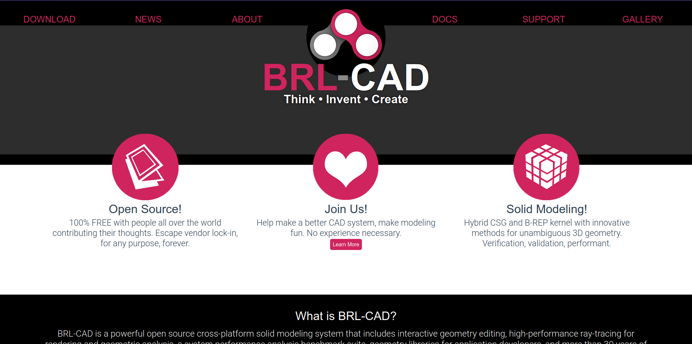 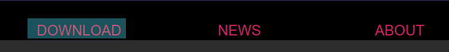 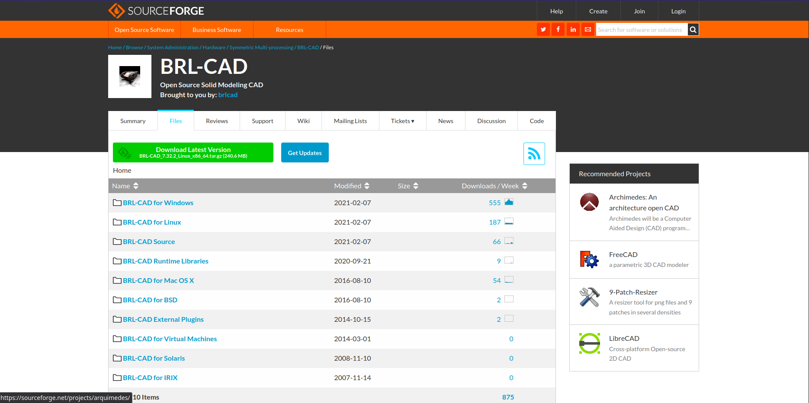 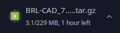 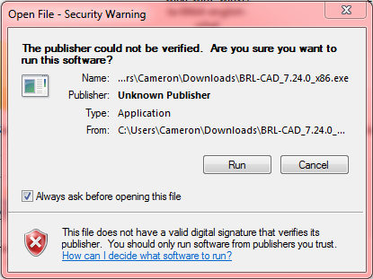
Then what? It installed programs that don't run. They just say "The procedure entry point GetSystemTimePreciseAsFileTime could not be located in the dynamic link library KERNEL32.dll".
Modeling
Now you can start modeling!
First, you need to search for mged in your computer’s finder or on the start menu and open the program. Once you have opened up MGED you see that there is a terminal with a white background and a graphical window with a black background.
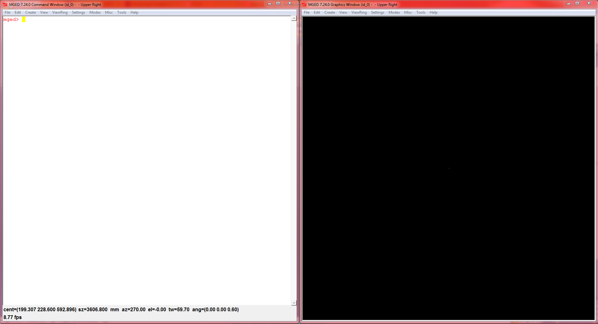
Once you see that you can almost begin to model, but first you need to create the file, or database that you are editing. In order to do that you need to go to the graphical layout then click File>New
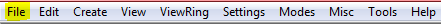
and type in the file name and select the file that will be saved, then click save. After that, you will be prompted if you want to make the database, click yes and now you can start modeling! The first shape that I made was a sphere, but there are many other types of primitive shapes http://brlcad.org/gallery/diagrams/primitives. Type in the console (make sphere1 sph) and then if you look in the graphical window you will see a very crude sphere.
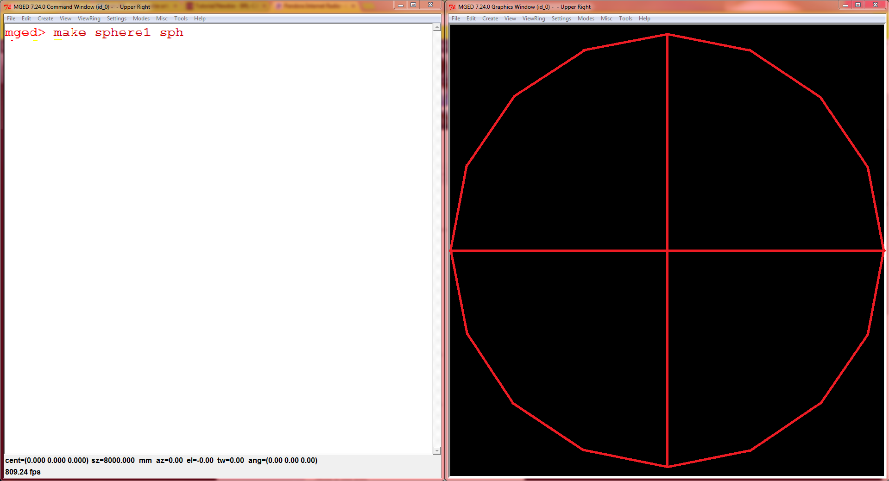
Then if you want to make a cube type in (make cube1 arb8) and you will have your very own cube.
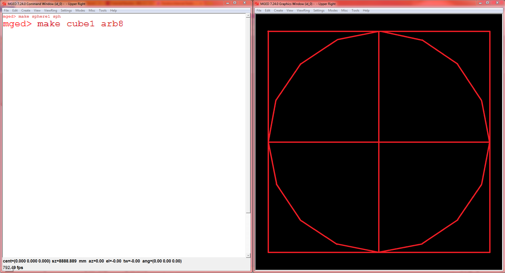
Then you can type in the names of other shapes and you will see that they make the object that you type in. After making part of your model, you decide that you don’t like the cube floating in space so you want to delete it. All you have to do is type in erase cube1 then it will erase itself from the graphical layout, but it is not completely gone, if you want it back all you have to do is type in draw cube1 and you will have your cube back. Only if you need the shape gone for good and will never use it again for any reason in that model, type in kill cube1 and it will be gone for good. After finishing, type in rt in the console, and you will see your model rendered and showing you how it would look with faces and lighting instead of a wireframe.
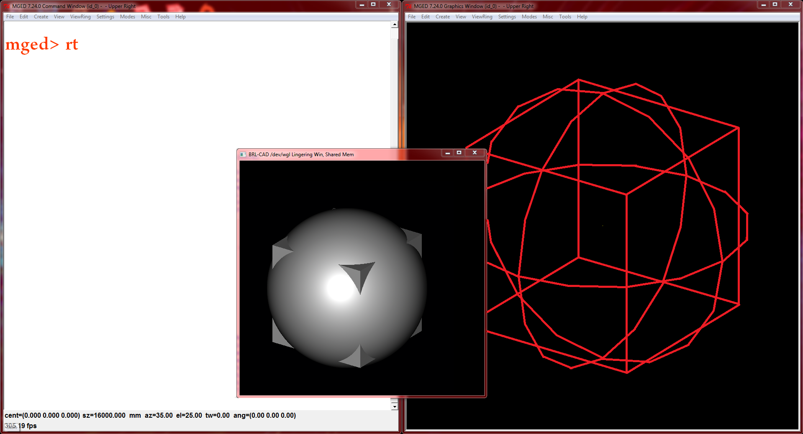
If you don’t know how to do a certain thing then just type in help. and all of the commands will be listed with a description of what they do and how you use them.
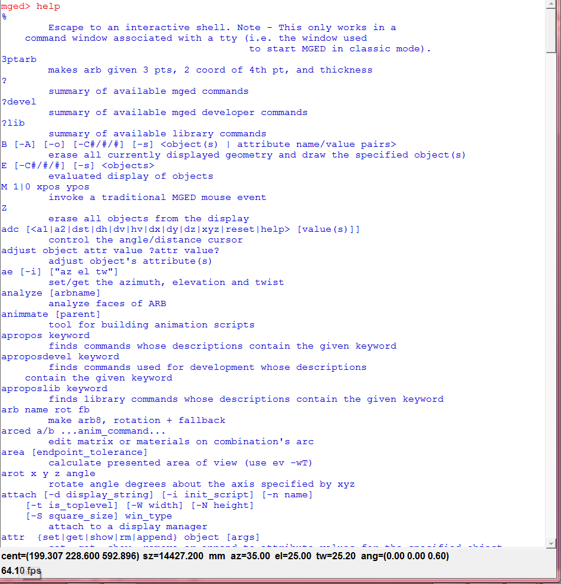
Thank you for reading, and good modeling!
Where to go from here
brlcad-7.26.4/doc/docbook/README:
"...
This directory holds the DocBook (DB) documentation for BRL-CAD. Over
time, this should become the repository for all tutorials, man pages,
and other non-autogenerated, formatted documentation for BRL-CAD.
...
The current structure is as follows:
articles/ ...
books/ ...
lessons/ ...
resources/ ...
system/ ...
presentations/ ...
..."
Unfortunately, as for now, only parts of this Documentation are available online and only in pdf. To acquire these documents you will most likely need to install BRL-CAD, and if you are lucky, they were installed as well during the installation. The location may vary from System to System.